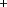
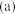
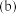
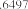
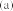
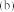
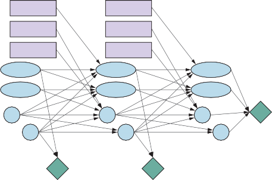
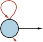
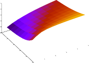

Sequential Decision Problems
×
×
Suppose that an agent is situated in the 4 3 environment shown in Figure 16.1(a). Beginning
in the start state, it must choose an action at each time step. The interaction with the environ-
ment terminates when the agent reaches one of the goal states, marked +1 or –1. Just as for
search problems, the actions available to the agent in each state are given by ACTIONS(s),
sometimes abbreviated to A(s); in the 4 3 environment, the actions in every state are Up,
Down, Left, and Right. We assume for now that the environment is fully observable, so that
the agent always knows where it is.If the environment were deterministic, a solution would be easy: [Up, Up, Right, Right,]. Unfortunately, the environment won’t always go along with this solution, because the
actions are unreliable. The particular model of stochastic motion that we adopt is illustrated
in Figure 16.1(b). Each action achieves the intended effect with probability 0.8, but the rest
of the time, the action moves the agent at right angles to the intended direction. Furthermore,
if the agent bumps into a wall, it stays in the same square. For example, from the start square
(1,1), the action Up moves the agent to (1,2) with probability 0.8, but with probability 0.1, it
moves right to (2,1), and with probability 0.1, it moves left, bumps into the wall, and stays
in (1,1). In such an environment, the sequence [Up, Up, Right, Right, Right] goes up around
the barrier and reaches the goal state at (4,3) with probability 0.85 = 0.32768. There is also a
small chance of accidentally reaching the goal by going the other way around with probability0.14 × 0.8, for a grand total of 0.32776. (See also Exercise 16.MDPX.)
Section 16.1 Sequential Decision Problems 553



×
Figure 16.1 (a) A simple, stochastic 4 3 environment that presents the agent with a se-
quential decision problem. (b) Illustration of the transition model of the environment: the
“intended” outcome occurs with probability 0.8, but with probability 0.2 the agent moves
at right angles to the intended direction. A collision with a wall results in no movement.
Transitions into the two terminal states have reward +1 and –1, respectively, and all other
transitions have a reward of –0.04.|
As in Chapter 3, the transition model (or just “model,” when the meaning is clear) de-
scribes the outcome of each action in each state. Here, the outcome is stochastic, so we write
P(s′ s, a) for the probability of reaching state s′ if action a is done in state s. (Some authors
write T (s, a, s′) for the transition model.) We will assume that transitions are Markovian: the
probability of reaching s′ from s depends only on s and not on the history of earlier states.To complete the definition of the task environment, we must specify the utility function
for the agent. Because the decision problem is sequential, the utility function will depend
on a sequence of states and actions—an environment history—rather than on a single state.Later in this section, we investigate the nature of utility functions on histories; for now, we
simply stipulate that for every transition from s to s′ via action a, the agent receives a reward Reward
±
R(s, a, s′). The rewards may be positive or negative, but they are bounded by Rmax.1
—
× −
For our particular example, the reward is 0.04 for all transitions except those entering
terminal states (which have rewards +1 and –1). The utility of an environment history is just
(for now) the sum of the rewards received. For example, if the agent reaches the +1 state after
10 steps, its total utility will be (9 0.04) + 1 = 0.64. The negative reward of –0.04 gives
the agent an incentive to reach (4,3) quickly, so our environment is a stochastic generalization
of the search problems of Chapter 3. Another way of saying this is that the agent does not
enjoy living in this environment and so it wants to leave as soon as possible.To sum up: a sequential decision problem for a fully observable, stochastic environment
process
with a Markovian transition model and additive rewards is called a Markov decision process, Markov decision
|
or MDP, and consists of a set of states (with an initial state s0); a set ACTIONS(s) of actions
in each state; a transition model P(s′ s, a); and a reward function R(s, a, s′). Methods forprogramming
solving MDPs usually involve dynamic programming: simplifying a problem by recursively Dynamic
breaking it into smaller pieces and remembering the optimal solutions to the pieces.
1 It is also possible to use costs c(s, a, s′), as we did in the definition of search problems in Chapter 3. The use
of rewards is, however, standard in the literature on sequential decisions under uncertainty.554 Chapter 16 Making Complex Decisions
Policy
Optimal policy
The next question is, what does a solution to the problem look like? No fixed action
sequence can solve the problem, because the agent might end up in a state other than the
goal. Therefore, a solution must specify what the agent should do for any state that the agent
might reach. A solution of this kind is called a policy. It is traditional to denote a policy by π,
and π(s) is the action recommended by the policy π for state s. No matter what the outcome
of the action, the resulting state will be in the policy, and the agent will know what to do next.Each time a given policy is executed starting from the initial state, the stochastic nature
of the environment may lead to a different environment history. The quality of a policy is
therefore measured by the expected utility of the possible environment histories generated
by that policy. An optimal policy is a policy that yields the highest expected utility. We
use π∗ to denote an optimal policy. Given π∗, the agent decides what to do by consulting
its current percept, which tells it the current state s, and then executing the action π∗(s). A
policy represents the agent function explicitly and is therefore a description of a simple reflex
agent, computed from the information used for a utility-based agent.The optimal policies for the world of Figure 16.1 are shown in Figure 16.2(a). There are
two policies because the agent is exactly indifferent between going left and going up from
(3,1): going left is safer but longer, while going up is quicker but risks falling into (4,2) by
accident. In general there will often be multiple optimal policies.—
− −
—
− −
The balance of risk and reward changes depending on the value of r = R(s, a, s′) for tran-
sitions between nonterminal states. The policies shown in Figure 16.2(a) are optimal for
0.0850 < r < 0.0273. Figure 16.2(b) shows optimal policies for four other ranges of r.
When r < 1.6497, life is so painful that the agent heads straight for the nearest exit, even
if the exit is worth –1. When 0.7311 < r < 0.4526, life is quite unpleasant; the agent
takes the shortest route to the +1 state from (2,1), (3,1), and (3,2), but from (4,1) the cost of
reaching +1 is so high that the agent prefers to dive straight into –1. When life is only slightly
dreary ( 0.0274 < r < 0), the optimal policy takes no risks at all. In (4,1) and (3,2), the
agent heads directly away from the –1 state so that it cannot fall in by accident, even though
this means banging its head against the wall quite a few times. Finally, if r > 0, then life is
positively enjoyable and the agent avoids both exits. As long as the actions in (4,1), (3,2),
and (3,3) are as shown, every policy is optimal, and the agent obtains infinite total reward
because it never enters a terminal state. It turns out that there are nine optimal policies in allfor various ranges of r; Exercise 16.THRC asks you to find them.
The introduction of uncertainty brings MDPs closer to the real world than deterministic
search problems. For this reason, MDPs have been studied in several fields, including AI,
operations research, economics, and control theory. Dozens of solution algorithms have been
proposed, several of which we discuss in Section 16.2. First, however, we spell out in more
detail the definitions of utilities, optimal policies, and models for MDPs.Utilities over time
In the MDP example in Figure 16.1, the performance of the agent was measured by a sum of
rewards for the transitions experienced. This choice of performance measure is not arbitrary,
but it is not the only possibility for the utility function2 on environment histories, which we
write as Uh([s0, a0, s1, a1 . . . , sn]).2 In this chapter we use U for the utility function (to be consistent with the rest of the book), but many works
about MDPs use V (for value) instead.


Section 16.1 Sequential Decision Problems 555



—


Figure 16.2 (a) The optimal policies for the stochastic environment with r = 0.04 for
transitions between nonterminal states. There are two policies because in state (3,1) both
Left and Up are optimal. (b) Optimal policies for four different ranges of r.The first question to answer is whether there is a finite horizon or an infinite horizon Finite horizon
for decision making. A finite horizon means that there is a fixed time N after which nothing
matters—the game is over, so to speak. Thus,Uh([s0, a0, s1, a1, . . . , sN+k]) = Uh([s0, a0, s1, a1, . . . , sN])
×
for all k > 0. For example, suppose an agent starts at (3,1) in the 4 3 world of Figure 16.1,
and suppose that N = 3. Then, to have any chance of reaching the +1 state, the agent must
head directly for it, and the optimal action is to go Up. On the other hand, if N = 100, thenInfinite horizon
there is plenty of time to take the safe route by going Left. So, with a finite horizon, an optimal K
action in a given state may depend on how much time is left. A policy that depends on the
time is called nonstationary. Nonstationary policy
With no fixed time limit, on the other hand, there is no reason to behave differently in the
same state at different times. Hence, an optimal action depends only on the current state, andthe optimal policy is stationary. Policies for the infinite-horizon case are therefore simpler Stationary policy
than those for the finite-horizon case, and we deal mainly with the infinite-horizon case in
this chapter. (We will see later that for partially observable environments, the infinite-horizon
case is not so simple.) Note that “infinite horizon” does not necessarily mean that all state
sequences are infinite; it just means that there is no fixed deadline. There can be finite state
sequences in an infinite-horizon MDP that contains a terminal state.The next question we must decide is how to calculate the utility of state sequences.
reward
Throughout this chapter, we will additive discounted rewards: the utility of a history is Additive discounted
Uh([s0, a0, s1, a1, s2, . . .]) = R(s0, a0, s1) + γR(s1, a1, s2) + γ2R(s2, a2, s3) + · · · ,
where the discount factor γ is a number between 0 and 1. The discount factor describes the Discount factor
preference of an agent for current rewards over future rewards. When γ is close to 0, rewards
in the distant future are viewed as insignificant. When γ is close to 1, an agent is more willing
to wait for long-term rewards. When γ is exactly 1, discounted rewards reduce to the special556 Chapter 16 Making Complex Decisions
Additive reward
case of purely additive rewards. Notice that additivity was used implicitly in our use of path
cost functions in heuristic search algorithms (Chapter 3).—
There are several reasons why additive discounted rewards make sense. One is empirical:
both humans and animals appear to value near-term rewards more highly than rewards in the
distant future. Another is economic: if the rewards are monetary, then it really is better to
get them sooner rather than later because early rewards can be invested and produce returns
while you’re waiting for the later rewards. In this context, a discount factor of γ is equivalent
to an interest rate of (1/γ) 1. For example, a discount factor of γ = 0.9 is equivalent to an
interest rate of 11.1%.—
A third reason is uncertainty about the true rewards: they may never arrive for all sorts of
reasons that are not taken into account in the transition model. Under certain assumptions, a
discount factor of gamma is equivalent to adding a probability 1 γ of accidental termination
at every time step, independent of the action taken.A fourth justification arises from a natural property of preferences over histories. In the
terminology of multiattribute utility theory (see Section 15.4), each transition st at
st+1
Stationary
preferencecan be viewed as an attribute of the history [s0, a0, s1, a1, s2 . . .]. In principle, th−e→utility
function could depend in arbitrarily complex ways on these attributes. There is, however,
a highly plausible preference-independence assumption that can be made, namely that the
agent’s preferences between state sequences are stationary.Assume two histories [s0, a0, s1, a1, s2, . . .] and [s′0, a′0, s′1, a′1, s′2, . . .] begin with the same
transition (i.e., s0 = s′0, a0 = a′0, and s1 = s′1). Then stationarity for preferences means that
the two histories should be preference-ordered the same way as the histories [s1, a1, s2, . . .]
and [s′1, a′1, s′2, . . .]. In English, this means that if you prefer one future to another starting
tomorrow, then you should still prefer that future if it were to start today instead. Stationarityis a fairly innocuous-looking assumption, but additive discounting is the only form of utility
on histories that satisfies it.—
A final justification for discounted rewards is that it conveniently makes some nasty in-
finities go away. With infinite horizons there is a potential difficulty: if the environment does
not contain a terminal state, or if the agent never reaches one, then all environment histories
will be infinitely long, and utilities with additive undiscounted rewards will generally be infi-
nite. While we can agree that +∞ is better than ∞, comparing two state sequences with +∞
utility is more difficult. There are three solutions, two of which we have seen already:With discounted rewards, the utility of an infinite sequence is finite. In fact, if γ < 1
and rewards are bounded by ±Rmax, we have∞ ∞
U t t
Rmax
t = 0
t = 0
h([s0, a0, s1, . . .]) = ∑ γ R(st, at, st+1) ≤ ∑ γ Rmax = 1 −γ , (16.1)
Proper policy
using the standard formula for the sum of an infinite geometric series.
If the environment contains terminal states and if the agent is guaranteed to get to one, then we will never need to compare infinite sequences. A policy that is
guaranteed to reach a terminal state is called a proper policy. With proper policies,
we can use γ = 1 (i.e., additive undiscounted rewards). The first three policies shown
in Figure 16.2(b) are proper, but the fourth is improper. It gains infinite total reward
by staying away from the terminal states when the reward for transitions between non-
terminal states is positive. The existence of improper policies can cause the standardSection 16.1 Sequential Decision Problems 557
algorithms for solving MDPs to fail with additive rewards, and so provides a good rea-
son for using discounted rewards.Infinite sequences can be compared in terms of the average reward obtained per time Average reward
×
step. Suppose that transitions to square (1,1) in the 4 3 world have a reward of 0.1
while transitions to other nonterminal states have a reward of 0.01. Then a policy that
does its best to stay in (1,1) will have higher average reward than one that stays else-
where. Average reward is a useful criterion for some problems, but the analysis of
average-reward algorithms is complex.Additive discounted rewards present the fewest difficulties in evaluating histories, so we shall
use them henceforth.Optimal policies and the utilities of states
Having decided that the utility of a given history is the sum of discounted rewards, we can
compare policies by comparing the expected utilities obtained when executing them. We
assume the agent is in some initial state s and define St (a random variable) to be the state the
agent reaches at time t when executing a particular policy π. (Obviously, S0 = s, the state the
agent is in now.) The probability distribution over state sequences S1, S2, , is determinedby the initial state s, the policy π, and the transition model for the environment.
( ) =
∑ γ
t = 0
t, π(
t),
t+1)
,
The expected utility obtained by executing π starting in s is given by
U π s
E " ∞
(
tR S
S S #
(16.2)
where the expectation E is with respect to the probability distribution over state sequences
determined by s and π. Now, out of all the policies the agent could choose to execute starting
in s, one (or more) will have higher expected utilities than all the others. We’ll use πs∗ to
denote one of these policies:πs∗ = argmaxU π(s) . (16.3)
π
Remember that πs∗ is a policy, so it recommends an action for every state; its connection
with s in particular is that it’s an optimal policy when s is the starting state. A remarkable
consequence of using discounted utilities with infinite horizons is that the optimal policy is
independent of the starting state. (Of course, the action sequence won’t be independent;
remember that a policy is a function specifying an action for each state.) This fact seems
intuitively obvious: if policy πa∗ is optimal starting in a and policy πb∗ is optimal starting in b,
then, when they reach a third state c, there’s no good reason for them to disagree with each
other, or with πc∗, about what to do next.3 So we can simply write π∗ for an optimal policy.×
Given this definition, the true utility of a state is just U π∗ (s)—that is, the expected sum of
discounted rewards if the agent executes an optimal policy. We write this as U (s), matching
the notation used in Chapter 15 for the utility of an outcome. Figure 16.3 shows the utilities
for the 4 3 world. Notice that the utilities are higher for states closer to the +1 exit, because
fewer steps are required to reach the exit.3 Although this seems obvious, it does not hold for finite-horizon policies or for other ways of combining rewards
over time, such as taking the max. The proof follows directly from the uniqueness of the utility function on states,
as shown in Section 16.2.1.558 Chapter 16 Making Complex Decisions
0.8516
0.9078
0.9578
0.8016
0.7003
0.7453
0.6953
0.6514
0.4279
× −
Figure 16.3 The utilities of the states in the 4 3 world with γ = 1 and r = 0.04 for tran-
sitions to nonterminal states.The utility function U (s) allows the agent to select actions by using the principle of
maximum expected utility from Chapter 15—that is, choose the action that maximizes the
reward for the next step plus the expected discounted utility of the subsequent state:π∗(s) = argmax∑P(s′ | s, a)[R(s, a, s′) + γU (s′)] . (16.4)
a∈A(s) s′
►
Bellman equation
Q-function
We have defined the utility of a state, U (s), as the expected sum of discounted rewards from
that point onwards. From this, it follows that there is a direct relationship between the utility
of a state and the utility of its neighbors: the utility of a state is the expected reward for the
next transition plus the discounted utility of the next state, assuming that the agent chooses
the optimal action. That is, the utility of a state is given by|
U (s) = max ∑P(s′ s, a)[R(s, a, s′) + γ U (s′)] . (16.5)
a∈A(s) s′
This is called the Bellman equation, after Richard Bellman (1957). The utilities of the
states—defined by Equation (16.2) as the expected utility of subsequent state sequences—are
solutions of the set of Bellman equations. In fact, they are the unique solutions, as we show
in Section 16.2.1.×
Let us look at one of the Bellman equations for the 4 3 world. The expression for
U (1, 1) is
max{ [0.8(−0.04 + γU (1, 2)) + 0.1(−0.04 + γU (2, 1)) + 0.1(−0.04 + γU (1, 1))],
[0.9(−0.04 + γU (1, 1)) + 0.1(−0.04 + γU (1, 2))],
[0.9(−0.04 + γU (1, 1)) + 0.1(−0.04 + γU (2, 1))],
[0.8(−0.04 + γU (2, 1)) + 0.1(−0.04 + γU (1, 2)) + 0.1(−0.04 + γU (1, 1))]}
where the four expressions correspond to Up, Left, Down and Right moves. When we plug in
the numbers from Figure 16.3, with γ = 1, we find that Up is the best action.Another important quantity is the action-utility function, or Q-function: Q(s, a) is the
expected utility of taking a given action in a given state. The Q-function is related to utilities
in the obvious way:U (s) = max Q(s, a) . (16.6)
a
Section 16.1 Sequential Decision Problems 559
Furthermore, the optimal policy can be extracted from the Q-function as follows:
π∗(s) = argmax Q(s, a) . (16.7)
a
We can also develop a Bellman equation for Q-functions, noting that the expected total reward
for taking an action is its immediate reward plus the discounted utility of the outcome state,
which in turn can be expressed in terms of the Q-function:|
Q(s, a) = ∑P(s′ s, a)[R(s, a, s′) + γ U (s′)]
s′
= ∑P(s′ | s, a)[R(s, a, s′) + γ max Q(s′, a′)] (16.8)
s′ a′
Solving the Bellman equations for U (or for Q) gives us what we need to find an optimal
policy. The Q-function shows up again and again in algorithms for solving MDPs, so we
shall use the following definition:function Q-VALUE(mdp, s, a, U) returns a utility value
|
return ∑ P(s′ s, a)[R(s, a, s′) + γ U[s′]]
s′
Reward scales
Chapter 15 noted that the scale of utilities is arbitrary: an affine transformation leaves the op-
timal decision unchanged. We can replace U (s) by U′(s) = mU (s) + b where m and b are any
constants such that m > 0. It is easy to see, from the definition of utilities as discounted sums
of rewards, that a similar transformation of rewards will leave the optimal policy unchanged
in an MDP:R′(s, a, s′) = mR(s, a, s′) + b.
It turns out, however, that the additive reward decomposition of utilities leads to significantly
more freedom in defining rewards. Let Φ(s) be any function of the state s. Then, accordingto the shaping theorem, the following transformation leaves the optimal policy unchanged: Shaping theorem
R′(s, a, s′) = R(s, a, s′) + γΦ(s′) − Φ(s) . (16.9)
To show that this is true, we need to prove that two MDPs, M and M′, have identical optimal
policies as long as they differ only in their reward functions as specified in Equation (16.9).
We start from the Bellman equation for Q, the Q-function for MDP M:Q(s, a) = ∑P(s′ | s, a)[R(s, a, s′) + γ max Q(s′, a′)] .
s′ a′
Now let Q′(s, a) = Q(s, a) − Φ(s) and plug it into this equation; we get
Q′(s, a) + Φ(s) = ∑P(s′ | s, a)[R(s, a, s′) + γ max(Q′(s′, a′) + Φ(s′))] .
s′ a′
which then simplifies to
Q′(s, a) = ∑P(s′ | s, a)[R(s, a, s′) + γΦ(s′) − Φ(s) + γ max Q′(s′, a′)]
s′ a′
= ∑P(s′ | s, a)[R′(s, a, s′) + γ max Q′(s′, a′)] .
s′ a′
560 Chapter 16 Making Complex Decisions
In other words, Q′(s, a) satisfies the Bellman equation for MDP M′. Now we can extract the
optimal policy for M′ using Equation (16.7):πM∗ ′ (s) = argmax Q′(s, a) = argmax Q(s, a) − Φ(s) = argmax Q(s, a) = πM∗ (s) .
a a a
—
—
The function Φ(s) is often called a potential, by analogy to the electrical potential (volt-
age) that gives rise to electric fields. The term γΦ(s′) Φ(s) functions as a gradient of the
potential. Thus, if Φ(s) has higher value in states that have higher utility, the addition of
γΦ(s′) Φ(s) to the reward has the effect of leading the agent “uphill” in utility.—
—
At first sight, it may seem rather counterintuitive that we can modify the reward in this
way without changing the optimal policy. It helps if we remember that all policies are optimal
with a reward function that is zero everywhere. This means, according to the shaping theorem,
that all policies are optimal for any potential-based reward of the form R(s, a, s′) = γΦ(s′)
Φ(s). Intuitively, this is because with such a reward it doesn’t matter which way the agent
goes from A to B. (This is easiest to see when γ = 1: along any path the sum of rewards
collapses to Φ(B) Φ(A), so all paths are equally good.) So adding a potential-based reward
to any other reward shouldn’t change the optimal policy.The flexibility afforded by the shaping theorem means that we can actually help out the
agent by making the immediate reward more directly reflect what the agent should do. In
fact, if we set Φ(s) =U (s), then the greedy policy πG with respect to the modified reward R′
is also an optimal policy:πG(s) = argmax∑P(s′ | s, a)R′(s, a, s′)
a s′
= argmax∑P(s′ | s, a)[R(s, a, s′) + γΦ(s′) − Φ(s)]
a s′
= argmax∑P(s′ | s, a)[R(s, a, s′) + γU (s′) −U (s)]
a s′
= argmax∑P(s′ | s, a)[R(s, a, s′) + γU (s′)]
a s′
Dynamic decision
network= π∗(s) (by Equation (16.4)) .
Of course, in order to set Φ(s) =U (s), we would need to know U (s); so there is no free lunch,
but there is still considerable value in defining a reward function that is helpful to the extent
possible. This is precisely what animal trainers do when they provide a small treat to the
animal for each step in the target sequence.Representing MDPs
×
| |
| | | | ×
|
The simplest way to represent P(s′ s, a) and R(s, a, s′) is with big, three-dimensional tables
of size S 2 A . This is fine for small problems such as the 4 3 world, for which the tables
have 112 4 = 484 entries each. In some cases, the tables are sparse—most entries are zero
because each state s can transition to only a bounded number of states s′—which means the
tables are of size O( S A ). For larger problems, even sparse tables are far too big.
A ). For larger problems, even sparse tables are far too big.Just as in Chapter 15, where Bayesian networks were extended with action and utility
nodes to create decision networks, we can represent MDPs by extending dynamic Bayesian
networks (DBNs, see Chapter 14) with decision, reward, and utility nodes to create dynamic, or DDNs. DDNs are factored representations in the terminology ofSection 16.1 Sequential Decision Problems 561
Plug/Unplugt
Plug/Unplugt+1
LeftWheelt
LeftWheelt+1
RightWheelt
RightWheelt+1
Chargingt
Chargingt+1
Chargingt+2
Batteryt
Batteryt+1
Batteryt+2
X˙ t
Xt
X˙ t+1
Xt+1
X˙ t+2
Xt+2
Rt
Rt+1
Ut+2

Figure 16.4 A dynamic decision network for a mobile robot with state variables for battery
level, charging status, location, and velocity, and action variables for the left and right wheel
motors and for charging.Chapter 2; they typically have an exponential complexity advantage over atomic representa-
tions and can model quite substantial real-world problems.Figure 16.4, which is based on the DBN in Figure 14.13(b) (page 504), shows some
elements of a slightly realistic model for a mobile robot that can charge itself. The state St is
decomposed into four state variables:Xt consists of the two-dimensional location on a grid plus the orientation;
X˙ t is the rate of change of Xt;
Chargingt is true when the robot is plugged in to a power source;
Batteryt is the battery level, which we model as an integer in the range 0,..., 5.
The state space for the MDP is the Cartesian product of the ranges of these four variables. The
action is now a set At of action variables, comprised of Plug/Unplug, which has three values
(plug, unplug, and noop); LeftWheel for the power sent to the left wheel; and RightWheel for
the power sent to the right wheel. The set of actions for the MDP is the Cartesian product of
the ranges of these three variables. Notice that each action variable affects only a subset of
the state variables.|
The overall transition model is the conditional distribution P(Xt+1 Xt, At), which can be
computed as a product of conditional probabilities from the DDN. The reward here is a single
variable that depends only on the location X (for, say, arriving at a destination) and Charging,
as the robot has to pay for electricity used; in this particular model, the reward doesn’t depend
on the action or the outcome state.The network in Figure 16.4 has been projected two steps into the future. Notice that the
network includes nodes for the rewards for times t and t + 1, but the utility for time t + 2. This562 Chapter 16 Making Complex Decisions
At
At+1
NextPiecet
NextPiecet+1
CurrentPiecet
CurrentPiecet+1
Filledt
Filledt+1
Rt
Rt+1
Next
(a) (b)
Figure 16.5 (a) The game of Tetris. The T-shaped piece at the top center can be dropped
in any orientation and in any horizontal position. If a row is completed, that row disappears
and the rows above it move down, and the agent receives one point. The next piece (here, the
L-shaped piece at top right) becomes the current piece, and a new next piece appears, chosen
at random from the seven piece types. The game ends if the board fills up to the top. (b) The
DDN for the Tetris MDP.is because the agent must maximize the (discounted) sum of all future rewards, and U (Xt+3)
represents the reward for all rewards from t + 3 onwards. If a heuristic approximation to U is
available, it can be included in the MDP representation in this way and used in lieu of further
expansion. This approach is closely related to the use of bounded-depth search and heuristic
evaluation functions for games in Chapter 6.×
Another interesting and well-studied MDP is the game of Tetris (Figure 16.5(a)). The
state variables for the game are the CurrentPiece, the NextPiece, and a bit-vector-valued
variable Filled with one bit for each of the 10 20 board locations. Thus, the state space has× × ≈
7 7 2200 1062 states. The DDN for Tetris is shown in Figure 16.5(b). Note that Filledt+1
is a deterministic function of Filledt and At. It turns out that every policy for Tetris is proper
(reaches a terminal state): eventually the board fills despite one’s best efforts to empty it.Monte Carlo
planningValue iteration
Algorithms for MDPs
In this section, we present four different algorithms for solving MDPs. The first three, value, policy iteration, and linear programming, generate exact solutions offline. The
fourth is a family of online approximate algorithms that includes Monte Carlo planning.Value Iteration
The Bellman equation (Equation (16.5)) is the basis of the value iteration algorithm for solv-
ing MDPs. If there are n possible states, then there are n Bellman equations, one for eachSection 16.2 Algorithms for MDPs 563
function VALUE-ITERATION(mdp, ϵ) returns a utility function
|
inputs: mdp, an MDP with states S, actions A(s), transition model P(s′ s, a),
rewards R(s, a, s′), discount γϵ, the maximum error allowed in the utility of any state
local variables: U, U′, vectors of utilities for states in S, initially zero
δ, the maximum relative change in the utility of any state
repeat
← ←
U U′; δ 0
for each state s in S do
U′[s] ← maxa∈A(s) Q-VALUE(mdp, s, a, U)
until
if |U′[s] − U[s]| > δ then δ ←|U′[s] − U[s]|
δ ≤ ϵ(1 −γ)/γ
return U
Figure 16.6 The value iteration algorithm for calculating utilities of states. The termination
condition is from Equation (16.12).state. The n equations contain n unknowns—the utilities of the states. So we would like to
solve these simultaneous equations to find the utilities. There is one problem: the equations
are nonlinear, because the “max” operator is not a linear operator. Whereas systems of linear
equations can be solved quickly using linear algebra techniques, systems of nonlinear equa-
tions are more problematic. One thing to try is an iterative approach. We start with arbitrary
initial values for the utilities, calculate the right-hand side of the equation, and plug it into the
left-hand side—thereby updating the utility of each state from the utilities of its neighbors.
We repeat this until we reach an equilibrium.Let Ui(s) be the utility value for state s at the ith iteration. The iteration step, called a
Bellman update, looks like this: Bellman update
← |
Ui+1(s) max ∑P(s′ s, a)[R(s, a, s′) + γ Ui(s′)] , (16.10)
a∈A(s) s′
where the update is assumed to be applied simultaneously to all the states at each iteration.
If we apply the Bellman update infinitely often, we are guaranteed to reach an equilibrium
(see “convergence of value iteration” below), in which case the final utility values must be
solutions to the Bellman equations. In fact, they are also the unique solutions, and the corre-
sponding policy (obtained using Equation (16.4)) is optimal. The detailed algorithm, includ-
ing a termination condition when the utilities are “close enough,” is shown in Figure 16.6.
Notice that we make use of the Q-VALUE function defined on page 559.×
We can apply value iteration to the 4 3 world in Figure 16.1(a). Starting with initial
values of zero, the utilities evolve as shown in Figure 16.7(a). Notice how the states at differ-
ent distances from (4,3) accumulate negative reward until a path is found to (4,3), whereupon
the utilities start to increase. We can think of the value iteration algorithm as propagatingthrough the state space by means of local updates.564 Chapter 16 Making Complex Decisions
1
0.8
0.6
0.4
0.2
0
0.2
(3,3)
(1,3)
(1,1)
(3,1)
(4,1)
Utility estimates
-
0 5 10 15 20 25 30 35 40
Number of iterations
1x107
Iterations required
1x106
100000
10000
1000
100
10
1
c = 0.0001
c = 0.001
c = 0.01
c = 0.1
0.5 0.6 0.7 0.8 0.9 1
Discount factor
(a) (b)
·
Figure 16.7 (a) Graph showing the evolution of the utilities of selected states using value
iteration. (b) The number of value iterations required to guarantee an error of at most ϵ = c
Rmax, for different values of c, as a function of the discount factor ц.Contraction
Max norm
Convergence of value iteration
We said that value iteration eventually converges to a unique set of solutions of the Bellman
equations. In this section, we explain why this happens. We introduce some useful mathe-
matical ideas along the way, and we obtain some methods for assessing the error in the utility
function returned when the algorithm is terminated early; this is useful because it means that
we don’t have to run forever. This section is quite technical.The basic concept used in showing that value iteration converges is the notion of a con-. Roughly speaking, a contraction is a function of one argument that, when applied to
two different inputs in turn, produces two output values that are “closer together,” by at least
some constant factor, than the original inputs. For example, the function “divide by two” is
a contraction, because, after we divide any two numbers by two, their difference is halved.
Notice that the “divide by two” function has a fixed point, namely zero, that is unchanged by
the application of the function. From this example, we can discern two important properties
of contractions:A contraction has only one fixed point; if there were two fixed points they would not
get closer together when the function was applied, so it would not be a contraction.When the function is applied to any argument, the value must get closer to the fixed
point (because the fixed point does not move), so repeated application of a contraction
always reaches the fixed point in the limit.
Now, suppose we view the Bellman update (Equation (16.10)) as an operator B that is ap-
plied simultaneously to update the utility of every state. Then the Bellman equation becomes
U = BU and the Bellman update equation can be written asUi+1 ← BUi .
Next, we need a way to measure distances between utility vectors. We will use the max norm,
which measures the “length” of a vector by the absolute value of its biggest component:

s
U = max |U (s)| .
Section 16.2 Algorithms for MDPs 565
—
With this definition, the “distance” between two vectors,
 U U′
U U′  , is the maximum dif-
, is the maximum dif-
ference between any two corresponding elements. The main result of this section is the
following: Let Ui and Ui′ be any two utility vectors. Then we have


BUi −BUi′ ≤ ц Ui −Ui′ . (16.11)
That is, the Bellman update is a contraction by a factor of ц on the space of utility vectors. K
(Exercise 16.VICT provides some guidance on proving this claim.) Hence, from the properties
of contractions in general, it follows that value iteration always converges to a unique solution
of the Bellman equations whenever ц < 1.We can also use the contraction property to analyze the rate of convergence to a solu-
tion. In particular, we can replace Ui′ in Equation (16.11) with the true utilities U , for which
BU =U . Then we obtain the inequality


BUi −U ≤ ц Ui −U .
—
· − ≤
— ≤ −
± −
If we view
 Ui U
Ui U  as the error in the estimate Ui, we see that the error is reduced by a factor
as the error in the estimate Ui, we see that the error is reduced by a factor
of at least ц on each iteration. Thus, value iteration converges exponentially fast. We can
calculate the number of iterations required as follows: First, recall from Equation (16.1) that
the utilities of all states are bounded by Rmax/(1 ц). This means that the maximum initial
error U0 U
U0 U  2Rmax/(1 ц). Suppose we run for N iterations to reach an error of at most
2Rmax/(1 ц). Suppose we run for N iterations to reach an error of at most
ϵ. Then, because the error is reduced by at least ц each time, we require цN 2Rmax/(1 ц)ϵ. Taking logs, we find that
N = [log(2Rmax/ϵ(1 −ц))/ log(1/ц)|
iterations suffice. Figure 16.7(b) shows how N varies with ц, for different values of the ratio
ϵ/Rmax. The good news is that, because of the exponentially fast convergence, N does not
depend much on the ratio ϵ/Rmax. The bad news is that N grows rapidly as ц becomes close
to 1. We can get fast convergence if we make ц small, but this effectively gives the agent a
short horizon and could miss the long-term effects of the agent’s actions.The error bound in the preceding paragraph gives some idea of the factors influencing the
run time of the algorithm, but is sometimes overly conservative as a method of deciding when
to stop the iteration. For the latter purpose, we can use a bound relating the error to the size of
the Bellman update on any given iteration. From the contraction property (Equation (16.11)),
it can be shown that if the update is small (i.e., no state’s utility changes by much), then the
error, compared with the true utility function, also is small. More precisely,


if Ui+1 −Ui < ϵ(1 −ц)/ц then Ui+1 −U < ϵ . (16.12)
This is the termination condition used in the VALUE-ITERATION algorithm of Figure 16.6.So far, we have analyzed the error in the utility function returned by the value iteration
algorithm. What the agent really cares about, however, is how well it will do if it makes its K
decisions on the basis of this utility function. Suppose that after i iterations of value iteration,the agent has an estimate Ui of the true utility U and obtains the maximum expected utility
(MEU) policy πi based on one-step look-ahead using Ui (as in Equation (16.4)). Will the
resulting behavior be nearly as good as the optimal behavior? This is a crucial question for
any real agent, and it turns out that the answer is yes. U πi (s) is the utility obtained if πi

is executed starting in s, and the policy loss U πi −U is the most the agent can lose by Policy loss
566 Chapter 16 Making Complex Decisions
Max error
Policy lossMax error/Policy loss
1
0.8
0.6
0.4
0.2
0
0 2 4 6 8 10 12 14
Number of iterations


Figure 16.8 The maximum error Ui −U of the utility estimates and the policy loss U πi −

U , as a function of the number of iterations of value iteration on the 4 × 3 world.
Policy iteration
Policy evaluation
Policy improvement
executing πi instead of the optimal policy π∗. The policy loss of πi is connected to the error
in Ui by the following inequality:


if Ui −U <ϵ then U πi −U < 2ϵ. (16.13)
×
In practice, it often occurs that πi becomes optimal long before Ui has converged. Figure 16.8
shows how the maximum error in Ui and the policy loss approach zero as the value iteration
process proceeds for the 4 3 environment with γ = 0.9. The policy πi is optimal when i = 5,
even though the maximum error in Ui is still 0.51.Now we have everything we need to use value iteration in practice. We know that it
converges to the correct utilities, we can bound the error in the utility estimates if we stop
after a finite number of iterations, and we can bound the policy loss that results from executing
the corresponding MEU policy. As a final note, all of the results in this section depend on
discounting with γ < 1. If γ = 1 and the environment contains terminal states, then a similar
set of convergence results and error bounds can be derived.Policy iteration
In the previous section, we observed that it is possible to get an optimal policy even when
the utility function estimate is inaccurate. If one action is clearly better than all others, then
the exact magnitude of the utilities on the states involved need not be precise. This insight
suggests an alternative way to find optimal policies. The policy iteration algorithm alternates
the following two steps, beginning from some initial policy π0:Policy evaluation: given a policy πi, calculate Ui =U πi , the utility of each state if πi
were to be executed.
Policy improvement: Calculate a new MEU policy πi+1, using one-step look-ahead
based on Ui (as in Equation (16.4)).The algorithm terminates when the policy improvement step yields no change in the utilities.
At this point, we know that the utility function Ui is a fixed point of the Bellman update, so
it is a solution to the Bellman equations, and πi must be an optimal policy. Because there are
only finitely many policies for a finite state space, and each iteration can be shown to yield aSection 16.2 Algorithms for MDPs 567
function POLICY-ITERATION(mdp) returns a policy
|
inputs: mdp, an MDP with states S, actions A(s), transition model P(s′ s, a)
local variables: U, a vector of utilities for states in S, initially zero
π, a policy vector indexed by state, initially random
repeat
←
U Policy-Evaluation(π, U, mdp)
←
unchanged? true
for each state s in S do
←
a∗ argmax Q-VALUE(mdp, s, a, U)
a∈A(s)
if Q-Value(mdp, s, a∗, U) > Q-Value(mdp, s, π[s], U) then
← ←
π[s] a∗; unchanged? false
until unchanged?
return π
Figure 16.9 The policy iteration algorithm for calculating an optimal policy.
better policy, policy iteration must terminate. The algorithm is shown in Figure 16.9. As with
value iteration, we use the Q-VALUE function defined on page 559.How do we implement POLICY-EVALUATION? It turns out that doing so is simpler than
solving the standard Bellman equations (which is what value iteration does), because the
action in each state is fixed by the policy. At the ith iteration, the policy πi specifies the action
πi(s) in state s. This means that we have a simplified version of the Bellman equation (16.5)
relating the utility of s (under πi) to the utilities of its neighbors:|
Ui(s) = ∑P(s′ s, πi(s))[R(s, πi(s), s′) + ц Ui(s′)] . (16.14)
s′
For example, suppose πi is the policy shown in Figure 16.2(a). Then we have πi(1, 1) = Up,
πi(1, 2) = Up, and so on, and the simplified Bellman equations are
Ui(1, 1) = 0.8[−0.04 + Ui(1, 2)] + 0.1[−0.04 + Ui(2, 1) + 0.1[−0.04 + Ui(1, 1)]] ,
Ui(1, 2) = 0.8[−0.04 + Ui(1, 3)] + 0.2[−0.04 + Ui(1, 2)] ,
and so on for all the states. The important point is that these equations are linear, because
the “max” operator has been removed. For n states, we have n linear equations with n un-
knowns, which can be solved exactly in time O(n3) by standard linear algebra methods. If the
transition model is sparse—that is, if each state transitions only to a small number of other
states—then the solution process can be faster still.For small state spaces, policy evaluation using exact solution methods is often the most
efficient approach. For large state spaces, O(n3) time might be prohibitive. Fortunately, it
is not necessary to do exact policy evaluation. Instead, we can perform some number of
simplified value iteration steps (simplified because the policy is fixed) to give a reasonably
good approximation of the utilities. The simplified Bellman update for this process is← |
Ui+1(s) ∑P(s′ s, πi(s))[R(s, πi(s), s′) + ц Ui(s′)] ,
s′
568 Chapter 16 Making Complex Decisions
Modified policy
iterationAsynchronous policy
iterationand this is repeated several times to efficiently produce the next utility estimate. The resulting
algorithm is called modified policy iteration.The algorithms we have described so far require updating the utility or policy for all states
at once. It turns out that this is not strictly necessary. In fact, on each iteration, we can pick
any subset of states and apply either kind of updating (policy improvement or simplified value
iteration) to that subset. This very general algorithm is called asynchronous policy iteration.
Given certain conditions on the initial policy and initial utility function, asynchronous policy
iteration is guaranteed to converge to an optimal policy. The freedom to choose any states to
work on means that we can design much more efficient heuristic algorithms—for example,
algorithms that concentrate on updating the values of states that are likely to be reached by a
good policy. There’s no sense planning for the results of an action you will never do.
Linear programming
Linear programming or LP, which was mentioned briefly in Chapter 4 (page 139), is a
general approach for formulating constrained optimization problems, and there are many
industrial-strength LP solvers available. Given that the Bellman equations involve a lot of
sums and maxes, it is perhaps not surprising that solving an MDP can be reduced to solving
a suitably formulated linear program.The basic idea of the formulation is to consider as variables in the LP the utilities U (s) of
each state s, noting that the utilities for an optimal policy are the highest utilities attainable that
are consistent with the Bellman equations. In LP language, that means we seek to minimize
U (s) for all s subject to the inequalities≥ |
U (s) ∑P(s′ s, a)[R(s, a, s′) + ц U (s′)]
s′
for every state s and every action a.
This creates a connection from dynamic programming to linear programming, for which
algorithms and complexity issues have been studied in great depth. For example, from the
fact that linear programming is solvable in polynomial time, one can show that MDPs can
be solved in time polynomial in the number of states and actions and the number of bits
required to specify the model. In practice, it turns out that LP solvers are seldom as efficient
as dynamic programming for solving MDPs. Moreover, polynomial time may sound good,
but the number of states is often very large. Finally, it’s worth remembering that even the
simplest and most uninformed of the search algorithms in Chapter 3 runs in linear time in the
number of states and actions.Online algorithms for MDPs
Value iteration and policy iteration are offline algorithms: like the A∗ algorithm in Chapter 3,
they generate an optimal solution for the problem, which can then be executed by a simple
agent. For sufficiently large MDPs, such as the Tetris MDP with 1062 states, exact offline
solution, even by a polynomial-time algorithm, is not possible. Several techniques have been
developed for approximate offline solution of MDPs; these are covered in the notes at the end
of the chapter and in Chapter 23 (Reinforcement Learning).Here we will consider online algorithms, analogous to those used for game playing in
Chapter 6, where the agent does a significant amount of computation at each decision point
rather than operating primarily with precomputed information.Section 16.2 Algorithms for MDPs 569
3,2
Up
Right
Down
Left
0.1 0.8 0.1
0.1 0.8 0.1
0.1 0.8 0.1
0.1 0.8 0.1
3,2 3,3
4,2
–1
3,3
4,2
–1
3,1
4,2
–1
3,1 3,2 3,1 3,2 3,3


×
Figure 16.10 Part of an expectimax tree for the 4 3 MDP rooted at (3,2). The triangular
nodes are max modes and the circular nodes are chance nodes.The most straightforward approach is actually a simplification of the EXPECTIMINIMAX
algorithm for game trees with chance nodes: the EXPECTIMAX algorithm builds a tree of
alternating max and chance nodes, as illustrated in Figure 16.10. (There is a slight difference
from standard EXPECTIMINIMAX in that there are rewards on nonterminal as well as terminal
transitions.) An evaluation function can be applied to the nonterminal leaves of the tree, or
they can be given a default value. A decision can be extracted from the search tree by backing
up the utility values from the leaves, taking an average at the chance nodes and taking the
maximum at the decision nodes.For problems in which the discount factor ц is not too close to 1, the ϵ-horizon is a useful
concept. Let ϵ be a desired bound on the absolute error in the utilities computed from an
expectimax tree of bounded depth, compared to the exact utilities in the MDP. Then the ϵ-
horizon is the tree depth H such that the sum of rewards beyond any leaf at that depth is less
than ϵ—roughly speaking, anything that happens after H is irrelevant because it’s so far in
the future. Because the sum of rewards beyond H is bounded by цHRmax/(1 − ц), a depth[ − |
of H = logγ ϵ(1 ц)/Rmax suffices. So, building a tree to this depth gives near-optimal
decisions. For example, with ц = 0.5, ϵ = 0.1, and Rmax = 1, we find H = 5, which seems
reasonable. On the other hand, if ц = 0.9, H = 44, which seems less reasonable!In addition to limiting the depth, it is also possible to avoid the potentially enormous
branching factor at the chance nodes. (For example, if all the conditional probabilities in
a DBN transition model are nonzero, the transition probabilities, which are given by the
product of the conditional probabilities, are also nonzero, meaning that every state has someprobability of transitioning to every other state.)As noted in Section 13.4, expectations with respect to a probability distribution P can be
approximated by generating N samples from P and using the sample mean. In mathematical
form, we haveN
N
∑P(x) f (x) ≈ 1 ∑ f (xi) .
x i = 1
So, if the branching factor is very large, meaning that there are very many possible x values, a
good approximation to the value of the chance node can be obtained by sampling a bounded570 Chapter 16 Making Complex Decisions
0.5
Average total reward
0.4
0.3
0.2
0.1
0
-0.1
-0.2
-0.3
0 20 40 60 80 100 120 140 160
Number of playouts
Figure 16.11 Performance of UCT as a function of the number of playouts per move for the
4 × 3 world using a random playout policy, averaged over 1000 runs per data point.Real-time dynamic
programmingnumber of outcomes from the action. Typically, the samples will focus on the most likely
outcomes because those are most likely to be generated.
If you look closely at the tree in Figure 16.10, you will notice something: it isn’t really
a tree. For example, the root (3,2) is also a leaf, so one ought to consider this as a graph,
and one ought to constrain the value of the leaf (3,2) to be the same as the value of the root
(3,2), since they are the same state. In fact, this line of thinking quickly brings us back to
the Bellman equations that relate the values of states to the values of neighboring states. The
explored states actually constitute a sub-MDP of the original MDP, and this sub-MDP can
be solved using any of the algorithms in this chapter to yield a decision for the current state.
(Frontier states are typically given a fixed estimated value.)This general approach is called real-time dynamic programming (RTDP) and is quite
(RTDP) analogous to LRTA∗ in Chapter 4. Algorithms of this kind can be quite effective in moderate-
sized domains such as grid worlds; in larger domains such as Tetris, there are two issues.
First, the state space is such that any manageable set of explored states contains very few
repeated states, so one might as well use a simple expectimax tree. Second, a simple heuristic
for frontier nodes may not be enough to guide the agent, particularly if rewards are sparse.One possible fix is to apply reinforcement learning to generate a much more accurate
heuristic (see Chapter 23). Another approach is to look further ahead in the MDP using the
Monte Carlo approach of Section 6.4. In fact, the UCT algorithm from Figure 6.10 was
developed originally for MDPs rather than games. The changes required to solve MDPs
rather than games are minimal: they arise primarily from the fact that the opponent (nature)
is stochastic and from the need to keep track of rewards rather than just wins and losses.×
When applied to the 4 3 world, the performance of UCT is not especially impres-
sive. As Figure 16.11 shows, it takes 160 playouts on average to reach a total reward of
0.4, whereas an optimal policy has an expected total reward of 0.7453 from the initial state
(see Figure 16.3). One reason UCT can have difficulty is that is builds a tree rather than a
graph and uses (an approximation to) expectimax rather than dynamic programming. The×
4 3 world is very “loopy”: although there are only 9 nonterminal states, UCT’s playouts
often continue for more than 50 actions.Section 16.3 Bandit Problems 571
UCT seems better suited for Tetris, where the playouts go far enough into the future to
give the agent a sense of whether a potentially risky move will work out in the end or cause
a massive pile-up. Exercise 16.UCTT explores the application of UCT to Tetris. One partic-
ularly interesting question is how much a simple simulation policy can help—for example,
one that avoids creating overhangs and puts pieces as low as possible.
Bandit Problems
In Las Vegas, a one-armed bandit is a slot machine. A gambler can insert a coin, pull the
lever, and collect the winnings (if any). An n-armed bandit has n levers. Behind each N-armed bandit
lever is a fixed but unknown probability distribution of winnings; each pull samples from that
unknown distribution.The gambler must choose which lever to play on each successive coin—the one that has
paid off best, or maybe one that has not been tried yet? This is an example of the ubiquitous
tradeoff between exploitation of the current best action to obtain rewards and explorationof previously unknown states and actions to gain information, which can in some cases be
converted into a better policy and better long-term rewards. In the real world, one constantly
has to decide between continuing in a comfortable existence, versus striking out into the
unknown in the hopes of a better life.The n-armed bandit problem is a formal model for real problems in many vitally im-
portant areas, such as deciding which of n possible new treatments to try to cure a disease,
which of n possible investments to put part of your savings into, which of n possible re-
search projects to fund, or which of n possible advertisements to show when the user visits a
particular web page.Early work on the problem began in the U.S. during World War II; it proved so recalcitrant
that Allied scientists proposed that “the problem be dropped over Germany, as the ultimate
instrument of intellectual sabotage” (Whittle, 1979).It turns out that the scientists, both during and after the war, were trying to prove “obvi-
ously true” facts about bandit problems that are, in fact, false. (As Bradt et al. (1956) put it,
“There are many nice properties which optimal strategies do not possess.”) For example, it
was generally assumed that an optimal policy would eventually settle on the best arm in the
long run; in fact, there is a finite probability that an optimal policy settles on a suboptimal
arm. We now have a solid theoretical understanding of bandit problems as well as useful
algorithms for solving them.There are several different definitions of bandit problems; one of the cleanest and most Bandit problems
general is as follows:
process
Each arm Mi is a Markov reward process or MRP, that is, an MDP with only one Markov reward
|
possible action ai. It has states Si, transition model Pi(s′ s, ai), and reward Ri(s, ai, s′).
The arm defines a distribution over sequences of rewards Ri,0, Ri,1, Ri,2, . . ., where each
Ri,t is a random variable.× · · · ×
The overall bandit problem is an MDP: the state space is given by the Cartesian product
S = S1 Sn; the actions are a1, . . . , an; the transition model updates the state of
whichever arm Mi is selected, according to its specific transition model, leaving the
other arms unchanged; and the discount factor is ц.
572 Chapter 16 Making Complex Decisions
M


0, 2, 0, 7.2, 0, 0, 0, …
R0, R1, R2, R3, R4, …
M1


M


1, 1, 1, 1, 1, 1, 1, …
λ, λ, λ, λ, λ, λ, λ, …
Mλ


(a) (b)
Figure 16.12 (a) A simple deterministic bandit problem with two arms. The arms can be
pulled in any order, and each yields the sequence of rewards shown. (b) A more general case
of the bandit in (a), where the first arm gives an arbitrary sequence of rewards and the second
arm gives a fixed reward λ.This definition is very general, covering a wide range of cases. The key property is that the
arms are independent, coupled only by the fact that the agent can work on only one arm at
a time. It’s possible to define a still more general version in which fractional efforts can be
applied to all arms simultaneously, but the total effort across all arms is bounded; the basic
results described here carry over to this case.We will see shortly how to formulate a typical bandit problem within this framework, but
let’s warm up with the simple special case of deterministic reward sequences. Let ц = 0.5,
and suppose that there are two arms labeled M and M1. Pulling M multiple times yields the
sequence of rewards 0, 2, 0, 7.2, 0, 0,..., while pulling M1 yields 1, 1, 1,... (Figure 16.12(a)).
If, at the beginning, one had to commit to one arm or the other and stick with it, the choice
would be made by computing the utility (total discounted reward) for each arm:U (M) = (1.0 × 0) + (0.5 × 2) + (0.52 × 0) + (0.53 × 7.2) = 1.9
U (M1) =
∞
∑ 0.5t = 2.0 .
t = 0
One might think the best choice is to go with M1, but a moment’s more thought shows
that starting with M and then switching to M1 after the fourth reward gives the sequence
S = 0, 2, 0, 7.2, 1, 1, 1,..., for whichOne-armed bandit
∞
t = 4
U (S) = (1.0 × 0) + (0.5 × 2) + (0.52 × 0) + (0.53 × 7.2) + ∑ 0.5t = 2.025 .
Hence the strategy S that switches from M to M1 at the right time is better than either arm
individually. In fact, S is optimal for this problem: all other switching times give less reward.
Let’s generalize this case slightly, so that now the first arm M yields an arbitrary sequence
R0, R1, R2, . . . (which may be known or unknown) and the second arm Mλ yields λ, λ, λ,...
for some known fixed constant λ (see Figure 16.12(b)). This is called a one-armed banditin the literature, because it is formally equivalent to the case where there is one arm M that
produces rewards R0, R1, R2, . . . and costs λ for each pull. (Pulling arm M is equivalent to notSection 16.3 Bandit Problems 573
—
pulling Mλ, so it gives up a reward of λ each time.) With just one arm, the only choice is to
whether to pull again or to stop. If you pull the first arm T times (i.e., at times 0, 1,..., T 1we say that the stopping time is T . Stopping time
Going back to our version with M and Mλ, let’s assume that after T pulls of the first arm,
an optimal strategy eventually pulls the second arm for the first time. Since no information
is gained from this move (we already know the payoff will be λ), at time T + 1 we will be in
the same situation and thus an optimal strategy must make the same choice.t
+ ∑ ц λ
t = T
= ∑ ц λ,
t = 0
Equivalently, we can say that an optimal strategy is to run arm M up to time T and
then switch to Mλ for the rest of time. It’s possible that T = 0 if the strategy chooses Mλ
immediately, or T =∞ if the strategy never chooses Mλ, or somewhere in between. Now let’s
consider the value of λ such that an optimal strategy is exactly indifferent between (a) running
M up to the best possible stopping time and then switching to Mλ forever, and (b) choosing
Mλ immediately. At the tipping point we haveT>0
∑ ц
t = 0
max E " T−1
t R !
∞ t # ∞ t
which simplifies to
E ∑T−1 цt Rt
(16.15)
max t = 0
λ =
t = 0
T>0
E ∑T−1 цt .
This equation defines a kind of “value” for M in terms of its ability to deliver a stream of
timely rewards; the numerator of the fraction represents a utility while the denominator can
be thought of as a “discounted time,” so the value describes the maximum obtainable utility
per unit of discounted time. (It’s important to remember that T in the equation is a stopping
time, which is governed by a rule for stopping rather than being a simple integer; it reduces
to a simple integer only when M is a deterministic reward sequence.) The value defined inEquation (16.15) is called the Gittins index of M. Gittins index
The remarkable thing about the Gittins index is that it provides a very simple optimal
policy for any bandit problem: pull the arm that has the highest Gittins index, then update the K
Gittins indices. Furthermore, because the index of arm Mi depends only on the properties ofthat arm, an optimal decision on the first iteration can be calculated in O(n) time, where n is
the number of arms. And because the Gittins indices of the arms that are not selected remain
unchanged, each decision after the first one can be calculated in O(1) time.Calculating the Gittins index
To get more of a feel for the index, let’s calculate the value of the numerator, denominator,
and ratio in Equation (16.15) for different possible stopping times on the deterministic reward
sequence 0, 2, 0, 7.2, 0, 0, 0,...:T
Rt
∑ цtRt
∑ цt
1
0
0.0
1.0
2
2
1.0
1.5
3
0
1.0
1.75
4
7.2
1.9
1.875
5
0
1.9
1.9375
6
0
1.9
1.9687
ratio
0.0
0.6667
0.5714
1.0133
0.9806
0.9651
Clearly, the ratio will decrease from here on, because the numerator remains constant while
the denominator continues to increase. Thus, the Gittins index for this arm is 1.0133, the574 Chapter 16 Making Complex Decisions
0
2
0
7.2
0
0
λ
λ
λ
λ
λ
λ
0
2
0
7.2
0
0 0 0 0

0
0
λ λ λ λ λ λ
(a) (b)
Figure 16.13 (a) The reward sequence M = 0, 2, 0, 7.2, 0, 0, 0,... augmented with a choice to
switch permanently to a constant arm Mλ at each point. (b) An MDP whose optimal value
is exactly equivalent to the optimal value for (a), at the point where the optimal policy is
indifferent between M and Mλ.Restart MDP
Bernoulli bandit
maximum value attained by the ratio. In combination with a fixed arm Mλ with 0 < λ1.0133, the optimal policy collects the first four rewards from M and then switches to Mλ.
For λ > 1.0133, the optimal policy always chooses Mλ.≤
To calculate the Gittins index for a general arm M with current state s, we simply make
the following observation: at the tipping point where an optimal policy is indifferent between
choosing arm M and choosing the fixed arm Mλ, the value of choosing M is the same as the
value of choosing an infinite sequence of λ-rewards.—
Suppose we augment M so that at each state in M, the agent has two choices: either
continue with M as before, or quit and receive an infinite sequence of λ-rewards (see Fig-
ure 16.13(a)). This turns M into an MDP, whose optimal policy is just the optimal stopping
rule for M. Hence the value of an optimal policy in this new MDP is equal to the value of
an infinite sequence of λ-rewards, that is, λ/(1 ц). So we can just solve this MDP . . . but,
unfortunately, we don’t know the value of λ to put into the MDP, as this is precisely what
we are trying to calculate. But we do know that, at the tipping point, an optimal policy is
indifferent between M and Mλ, so we could replace the choice to get an infinite sequence of
λ-rewards with the choice to go back and restart M from its initial state s. (More precisely, we
add a new action in every state that has the same rewards and outcomes as the action avail-
able in s; see Exercise 16.KATV.) This new MDP Ms, called a restart MDP, is illustrated in
Figure 16.13(b).—
We have the general result that the Gittins index for an arm M in state s is equal to 1 цtimes the value of an optimal policy for the restart MDP Ms. This MDP can be solved by any
of the algorithms in Section 16.2. Value iteration applied to Ms in Figure 16.13(b) gives a
value of 2.0266 for the start state, so we have λ = 2.0266 · (1 −ц) = 1.0133 as before.The Bernoulli bandit
Perhaps the simplest and best-known instance of a bandit problem is the Bernoulli bandit,
where each arm Mi produces a reward of 0 or 1 with a fixed but unknown probability µi.
The state of arm Mi is defined by si and fi, the counts of successes (1s) and failures (0s) so
far for that arm; the transition probability predicts the next outcome to be 1 with probability
(si)/(si + fi) and 0 with probability ( fi)/(si + fi). The counts are initialized to 1 so that
the initial probabilities are 1/2 rather than 0/0.4 The Markov reward process is shown in
Figure 16.14(a).4 The probabilities are those of a Bayesian updating process with a Beta(1,1) prior (see Section 21.2.5).
Section 16.3 Bandit Problems 575
(2,1)
(1,1)
(1,2)
Gittins index
1R=1
p=1/2
R=0
p=1/2

0.8
0.6
R=1 0
p=2/3 1/3
1
1/3
R=0
p=2/3
0.4
0.2
100
R=1
p=3/4
0
1/4
1
2/4
0
2/4 1
1/4
R=0
p=3/4
(3,1)
(4,1) (3,2)
(2,2) (1,3)
(2,3) (1,4)
8
4
6
2
f 2 4 6
0 0 s
8 10
(a) (b)
Figure 16.14 (a) States, rewards, and transition probabilities for the Bernoulli bandit. (b)
Gittins indices for the states of the Bernoulli bandit process.We cannot quite apply the transformation of the preceding section to calculate the Gittins
index of the Bernoulli arm because it has infinitely many states. We can, however, obtain
a very accurate approximation by solving the truncated MDP with states up to si + fi = 100
and ц = 0.9. The results are shown in Figure 16.14(b). The results are intuitively reasonable:
we see that, generally speaking, arms with higher payoff probabilities are preferred, but thereis also an exploration bonus associated with arms that have only been tried a few times. Exploration bonus
For example, the index for the state (3,2) is higher than the index for the state (7,4) (0.7057
vs. 0.6922), even though the estimated value at (3,2) is lower (0.6 vs. 0.6364).Approximately optimal bandit policies
Calculating Gittins indices for more realistic problems is rarely easy. Fortunately, the general
properties observed in the preceding section—namely, the desirability of some combination
of estimated value and uncertainty—lend themselves to the creation of simple policies that
turn out to be “nearly as good” as optimal policies.bound
The first class of methods uses the upper confidence bound or UCB heuristic, previously Upper confidence
√
introduced for Monte Carlo tree search (Figure 6.11 on page 209). The basic idea is to use
the samples from each arm to establish a confidence interval for the value of the arm, that is,
a range within which the value can be estimated to lie with high confidence; then choose the
arm with the highest upper bound on its confidence interval. The upper bound is the current
mean value estimate µˆi plus some multiple of the standard deviation of the uncertainty in the
value. The standard deviation is proportional to 1/Ni, where Ni is the number of times arm
Mi has been sampled. So we have an approximate index value for arm Mi given byUCB(Mi) = µˆi + g(N)/√Ni ,
where g(N) is an appropriately chosen function of N, the total number of samples drawn
from all arms. A UCB policy simply picks the arm with the highest UCB value. Notice that
the UCB value is not strictly an index because it depends on N, the total number of samples
drawn across all arms, and not just on the arm itself.The precise definition of g determines the regret relative to the clairvoyant policy, which
simply picks the best arm and yields average reward µ∗. A famous result due to Lai and576 Chapter 16 Making Complex Decisions
Thompson sampling
Selection problem
►
Bandit superprocess
Robbins (1985) shows that, for the undiscounted case, no possible algorithm can have regret
that grows more slowly than O(log N). Several different choices of g lead to a UCB policy
that matches this growth; for example, we can use g(N) =(2 log(1 + N log2 N))1/2.A second method, Thompson sampling (Thompson, 1933), chooses an arm randomly
according to the probability that the arm is in fact optimal, given the samples so far. Suppose
that Pi(µi) is the current probability distribution for the true value of arm Mi. Then a simple
way to implement Thompson sampling is to generate one sample from each Pi and then pick
the best sample. This algorithm also has a regret that grows as O(log N).Non-indexable variants
Bandit problems were motivated in part by the task of testing new medical treatments on
seriously ill patients. For this task, the goal of maximizing the total number of successes over
time clearly makes sense: each successful test means a life saved, each failure a life lost.If we change the assumptions slightly, however, a different problem emerges. Suppose
that, instead of determining the best medical treatment for each new human patient, we are
instead testing different drugs on samples of bacteria with the goal of deciding which drug is
best. We will then put that drug into production and forgo the others. In this scenario there is
no additional cost if the bacteria dies—there is a fixed cost for each test, but we don’t have to
minimize test failures; rather we are just trying to make a good decision as fast as possible.The task of choosing the best option under these conditions is called a selection problem.
Selection problems are ubiquitous in industrial and personnel contexts. One often must decide
which supplier to use for a process; or which candidate employees to hire. Selection problems
are superficially similar to the bandit problem but have different mathematical properties. In
particular, no index function exists for selection problems. The proof of this fact requires
showing any scenario where the optimal policy switches its preferences for two arms M1 and
M2 when a third arm M3 is added (see Exercise 16.SELC).Chapter 6 introduced the concept of metalevel decision problems such as deciding what
computations to make during a game-tree search prior to making a move. A metalevel de-
cision of this kind is also a selection problem rather than a bandit problem. Clearly, a node
expansion or evaluation costs the same amount of time whether it produces a high or a low
output value. It is perhaps surprising, then, that the Monte Carlo tree search algorithm (see
page 209) has been so successful, given that it tries to solve selection problems with the UCB
heuristic, which was designed for bandit problems. Generally speaking, one expects optimal
bandit algorithms to explore much less than optimal selection algorithms, because the bandit
algorithm assumes that a failed trial costs real money.An important generalization of the bandit process is the bandit superprocess or BSP, in
BSP which each arm is a full Markov decision process in its own right, rather than being a Markov
reward process with only one possible action. All other properties remain the same: the arms
are independent, only one (or a bounded number) can be worked on at a time, and there is a
single discount factor.Examples of BSPs include daily life, where one can attend to one task at a time, even
though several tasks may need attention; project management with multiple projects; teaching
with multiple pupils needing individual guidance; and so on. The ordinary term for this isMultitasking
multitasking. It is so ubiquitous as to be barely noticeable: when formulating a real-world
decision problem, decision analysts rarely ask if their client has other, unrelated problems.Section 16.3 Bandit Problems 577
One might reason as follows: “If there are n disjoint MDPs then it is obvious that an
optimal policy overall is built from the optimal solutions of the individual MDPs. Given
its optimal policy πi, each MDP becomes a Markov reward process where there is only one
action πi(s) in each state s. So we have reduced the n-armed bandit superprocess to an n-
armed bandit process.” For example, if a real-estate developer has one construction crew and
several shopping centers to build, it seems to be just common sense that one should devise
the optimal construction plan for each shopping center and then solve the bandit problem to
decide where to send the crew each day.While this sounds highly plausible, it is incorrect. In fact, the globally optimal policy for a
BSP may include actions that are locally suboptimal from the point of view of the constituent
MDP in which they are taken. The reason for this is that the availability of other MDPs in
which to act changes the balance between short-term and long-term rewards in a component
MDP. In fact, it tends to lead to greedier behavior in each MDP (seeking short-term rewards)
because aiming for long-term reward in one MDP would delay rewards in all the other MDPs.For example, suppose the locally optimal construction schedule for one shopping center
has the first shop available for rent by week 15, whereas a suboptimal schedule costs more but
has the first shop available by week 5. If there are four shopping centers to build, it might be
better to use the locally suboptimal schedule in each so that rents start coming in from weeks
5, 10, 15, and 20, rather than weeks 15, 30, 45, and 60. In other words, what would be only a
10-week delay for a single MDP turns into a 40-week delay for the fourth MDP. In general,
the globally and locally optimal policies necessarily coincide only when the discount factor
is 1; in that case, there is no cost to delaying rewards in any MDP.The next question is how to solve BSPs. Obviously, the globally optimal solution for a
BSP could be computed by converting it into a global MDP on the Cartesian-product state
space. The number of states would be exponential in the number of arms of the BSP, so this
would be horrendously impractical.Instead, we can take advantage of the loose nature of the interaction between the arms.
This interaction arises only from the agent’s limited ability to attend to the arms simultane-ously. To some extent, the interaction can be modeled by the notion of opportunity cost: Opportunity cost
how much utility is given up per time step by not devoting that time step to another arm.
The higher the opportunity cost, the more necessary it is to generate early rewards in a given
arm. In some cases, an optimal policy in a given arm is unaffected by the opportunity cost.
(Trivially, this is true in a Markov reward process because there is only one policy.) In that
case, an optimal policy can be applied, converting that arm into a Markov reward process.Such an optimal policy, if it exists, is called a dominating policy. It turns out that by Dominating policy
adding actions to states, it is always possible to create a relaxed version of an MDP (see
Section 3.6.2) so that it has a dominating policy, which thus gives an upper bound on the
value of acting in the arm. A lower bound can be computed by solving each arm separately
(which may yield a suboptimal policy overall) and then computing the Gittins indices. If the
lower bound for acting in one arm is higher than the upper bounds for all other actions, then
the problem is solved; if not, then a combination of look-ahead search and recomputation of
bounds is guaranteed to eventually identify an optimal policy for the BSP. With this approach,
relatively large BSPs (1040 states or more) can be solved in a few seconds.578 Chapter 16 Making Complex Decisions
Partially observable
MDP
Partially Observable MDPs
The description of Markov decision processes in Section 16.1 assumed that the environment
was fully observable. With this assumption, the agent always knows which state it is in.
This, combined with the Markov assumption for the transition model, means that the optimal
policy depends only on the current state.When the environment is only partially observable, the situation is, one might say, much
less clear. The agent does not necessarily know which state it is in, so it cannot execute the
action π(s) recommended for that state. Furthermore, the utility of a state s and the optimal
action in s depend not just on s, but also on how much the agent knows when it is in s. For
these reasons, partially observable MDPs (or POMDPs—pronounced “pom-dee-pees”) are
usually viewed as much more difficult than ordinary MDPs. We cannot avoid POMDPs,
however, because the real world is one.Definition of POMDPs
|
×
|
—
To get a handle on POMDPs, we must first define them properly. A POMDP has the same
elements as an MDP—the transition model P(s′ s, a), actions A(s), and reward function
R(s, a, s′)—but, like the partially observable search problems of Section 4.4, it also has a
sensor model P(e s). Here, as in Chapter 14, the sensor model specifies the probability of
perceiving evidence e in state s.5 For example, we can convert the 4 3 world of Figure 16.1
into a POMDP by adding a noisy or partial sensor instead of assuming that the agent knows
its location exactly. The noisy four-bit sensor from page 494 could be used, which reports the
presence or absence of a wall in each compass direction with accuracy 1 ϵ.As with MDPs, we can obtain compact representations for large POMDPs by using dy-
namic decision networks (see Section 16.1.4). We add sensor variables Et, assuming that the
state variables Xt may not be directly observable. The POMDP sensor model is then given
by P(Et|Xt). For example, we might add sensor variables to the DDN in Figure 16.4 such asBatteryMetert to estimate the actual charge Batteryt and Speedometert to estimate the mag-
nitude of the velocity vector X˙ t . A sonar sensor Wallst might give estimated distances to thenearest wall in each of the four cardinal directions relative to the robot’s current orientation;
these values depends on the current position and orientation Xt.In Chapters 4 and 11, we studied nondeterministic and partially observable planning
problems and identified the belief state—the set of actual states the agent might be in—as a
key concept for describing and calculating solutions. In POMDPs, the belief state b becomes
a probability distribution over all possible states, just as in Chapter 14. For example, the initial9
9
9
9
9
9
9
9
9
belief state for the 4 × 3 POMDP could be the uniform distribution over the nine nonterminal
states along with 0s for the terminal states, that is, ⟨ 1 , 1 , 1 , 1 , 1 , 1 , 1 , 1 , 1 , 0, 0⟩.We use the notation b(s) to refer to the probability assigned to the actual state s by be-
lief state b. The agent can calculate its current belief state as the conditional probability
distribution over the actual states given the sequence of percepts and actions so far. This is
essentially the filtering task described in Chapter 14. The basic recursive filtering equation
(14.5 on page 485) shows how to calculate the new belief state from the previous belief state
and the new evidence. For POMDPs, we also have an action to consider, but the result is
essentially the same. If b was the previous belief state, and the agent does action a and then5 The sensor model can also depend on the action and outcome state, but this change is not fundamental.
Section 16.4 Partially Observable MDPs 579
perceives evidence e, then the new belief state is obtained by calculating the probability of
now being in state s′, for each s′, with the following formula:s
b′(s′) = α P(e|s′) ∑P(s′ | s, a)b(s) ,
where α is a normalizing constant that makes the belief state sum to 1. By analogy with the
update operator for filtering (page 485), we can write this asb′ = α FORWARD(b, a, e) . (16.16)
×
In the 4 3 POMDP, suppose the agent moves Left and its sensor reports one adjacent wall;
then it’s quite likely (although not guaranteed, because both the motion and the sensor are
noisy) that the agent is now in (3,1). Exercise 16.POMD asks you to calculate the exact
probability values for the new belief state.The fundamental insight required to understand POMDPs is this: the optimal action K
depends only on the agent’s current belief state. That is, an optimal policy can be described
by a mapping π∗(b) from belief states to actions. It does not depend on the actual state the
agent is in. This is a good thing, because the agent does not know its actual state; all it knows
is the belief state. Hence, the decision cycle of a POMDP agent can be broken down into the
following three steps:Given the current belief state b, execute the action a = π∗(b).
Observe the percept e.
Set the current belief state to FORWARD(b, a, e) and repeat.
×
We can think of POMDPs as requiring a search in belief-state space, just like the methods for
sensorless and contingency problems in Chapter 4. The main difference is that the POMDP
belief-state space is continuous, because a POMDP belief state is a probability distribution.
For example, a belief state for the 4 3 world is a point in an 11-dimensional continuous
space. An action changes the belief state, not just the physical state, because it affects the
percept that is received. Hence, the action is evaluated at least in part according to the in-
formation the agent acquires as a result. POMDPs therefore include the value of information
(Section 15.6) as one component of the decision problem.Let’s look more carefully at the outcome of actions. In particular, let’s calculate the
probability that an agent in belief state b reaches belief state b′ after executing action a. Now,
if we knew the action and the subsequent percept, then Equation (16.16) would provide a
deterministic update to the belief state: b′ = FORWARD(b, a, e). Of course, the subsequent
percept is not yet known, so the agent might arrive in one of several possible belief states b′,
depending on the percept that is received. The probability of perceiving e, given that a was
performed starting in belief state b, is given by summing over all the actual states s′ that the
agent might reach:s′
P(e|a, b) = ∑P(e|a, s′, b)P(s′|a, b)
| |
= ∑P(e s′)P(s′ a, b)
s′
= ∑P(e|s′) ∑P(s′ | s, a)b(s) .
s′ s
580 Chapter 16 Making Complex Decisions
|
Let us write the probability of reaching b′ from b, given action a, as P(b′ b, a). This proba-
bility can be calculated as follows:e
P(b′ |b, a) = ∑P(b′|e, a, b)P(e|a, b)
= ∑P(b′|e, a, b) ∑P(e|s′) ∑P(s′ | s, a)b(s) , (16.17)
e s′ s
|
where P(b′ e, a, b) is 1 if b′ = FORWARD(b, a, e) and 0 otherwise.
Equation (16.17) can be viewed as defining a transition model for the belief-state space.
We can also define a reward function for belief-state transitions, which is derived from the
expected reward of the real state transitions that might be occurring. Here, we use the simple
form ρ(b, a), the expected reward if the agent does a in belief state b:ρ(b, a) = ∑b(s) ∑P(s′ | s, a)R(s, a, s′) .
s s′
|
Together, P(b′ b, a) and ρ(b, a) define an observable MDP on the space of belief states.
Furthermore, it can be shown that an optimal policy for this MDP, π∗(b), is also an optimalpolicy for the original POMDP. In other words, solving a POMDP on a physical state space
can be reduced to solving an MDP on the corresponding belief-state space. This fact is
perhaps less surprising if we remember that the belief state is always observable to the agent,
by definition.
Algorithms for Solving POMDPs
We have shown how to reduce POMDPs to MDPs, but the MDPs we obtain have a contin-
uous (and usually high-dimensional) state space. This means we will have to redesign the
dynamic programming algorithms from Sections 16.2.1 and 16.2.2, which assumed a finite
state space and a finite number of actions. Here we describe a value iteration algorithm de-
signed specifically for POMDPs, followed by an online decision-making algorithm similar to
those developed for games in Chapter 6.Value iteration for POMDPs
Section 16.2.1 described a value iteration algorithm that computed one utility value for each
state. With infinitely many belief states, we need to be more creative. Consider an optimal
policy π∗ and its application in a specific belief state b: the policy generates an action, then,
for each subsequent percept, the belief state is updated and a new action is generated, and so
on. For this specific b, therefore, the policy is exactly equivalent to a conditional plan, as de-
fined in Chapter 4 for nondeterministic and partially observable problems. Instead of thinking
about policies, let us think about conditional plans and how the expected utility of executing
a fixed conditional plan varies with the initial belief state. We make two observations:·
Let the utility of executing a fixed conditional plan p starting in physical state s be αp(s).
Then the expected utility of executing p in belief state b is just ∑s b(s)αp(s), or b αp if
we think of them both as vectors. Hence, the expected utility of a fixed conditional plan
varies linearly with b; that is, it corresponds to a hyperplane in belief space.At any given belief state b, an optimal policy will choose to execute the conditional plan
with highest expected utility; and the expected utility of b under an optimal policy is just
Section 16.5 Algorithms for Solving POMDPs 581
[Go]
[Stay]
2 2
1.5 1.5
Utility
Utility
1 1
0.5 0.5
0
0 0.2 0.4 0.6 0.8 1
Probability of state B
(a)2
0
0 0.2 0.4 0.6 0.8 1
Probability of state B
(b)6
1.5 5.5
Utility
Utility
1 5
0.5 4.5
0
0 0.2 0.4 0.6 0.8 1
Probability of state B
(c)4
0 0.2 0.4 0.6 0.8
Probability of state B
(d)Figure 16.15 (a) Utility of two one-step plans as a function of the initial belief state b(B) for
the two-state world, with the corresponding utility function shown in bold. (b) Utilities for 8
distinct two-step plans. (c) Utilities for four undominated two-step plans. (d) Utility function
for optimal eight-step plans.·
the utility of that conditional plan: U (b) = U π∗ (b) = maxp b αp . If an optimal policy
π∗ chooses to execute p starting at b, then it is reasonable to expect that it might choose
to execute p in belief states that are very close to b; in fact, if we bound the depth of the
conditional plans, then there are only finitely many such plans and the continuous space
of belief states will generally be divided into regions, each corresponding to a particular
conditional plan that is optimal in that region.From these two observations, we see that the utility function U (b) on belief states, being the
maximum of a collection of hyperplanes, will be piecewise linear and convex.· · · ·
To illustrate this, we use a simple two-state world. The states are labeled A and B and
there are two actions: Stay stays put with probability 0.9 and Go switches to the other state
with probability 0.9. The rewards are R( , , A) = 0 and R( , , B) = 1; that is, any transition
ending in A has reward zero and any transition ending in B has reward 1. For now we will
assume the discount factor ц = 1. The sensor reports the correct state with probability 0.6.
Obviously, the agent should Stay when it’s in state B and Go when it’s in state A. The problem
is that it doesn’t know where it is!The advantage of a two-state world is that the belief space can be visualized in one di-
mension, because the two probabilities b(A) and b(B) sum to 1. In Figure 16.15(a), the x-axis582 Chapter 16 Making Complex Decisions
Dominated plan
represents the belief state, defined by b(B), the probability of being in state B. Now let us con-
sider the one-step plans [Stay] and [Go], each of which receives the reward for one transition
as follows:α[Stay](A) = 0.9R(A, Stay, A) + 0.1R(A, Stay, B) = 0.1
α[Stay](B) = 0.1R(B, Stay, A) + 0.9R(B, Stay, B) = 0.9
α[Go](A) = 0.1R(A, Go, A) + 0.9R(A, Go, B) = 0.9
α[Go](B) = 0.9R(B, Go, A) + 0.1R(B, Go, B) = 0.1
· ·
The hyperplanes (lines, in this case) for b α[Stay] and b α[Go] are shown in Figure 16.15(a) and
their maximum is shown in bold. The bold line therefore represents the utility function for
the finite-horizon problem that allows just one action, and in each “piece” of the piecewise
linear utility function an optimal action is the first action of the corresponding conditional
plan. In this case, the optimal one-step policy is to Stay when b(B) > 0.5 and Go otherwise.Once we have utilities αp(s) for all the conditional plans p of depth 1 in each physical
state s, we can compute the utilities for conditional plans of depth 2 by considering each
possible first action, each possible subsequent percept, and then each way of choosing a
depth-1 plan to execute for each percept:[Stay; if Percept = A then Stay else Stay]
[Stay; if Percept = A then Stay else Go]
[Go; if Percept = A then Stay else Stay]. . .
There are eight distinct depth-2 plans in all, and their utilities are shown in Figure 16.15(b).
Notice that four of the plans, shown as dashed lines, are suboptimal across the entire belief
space—we say these plans are dominated, and they need not be considered further. There
are four undominated plans, each of which is optimal in a specific region, as shown in Fig-
ure 16.15(c). The regions partition the belief-state space.We repeat the process for depth 3, and so on. In general, let p be a depth-d conditional
plan whose initial action is a and whose depth-(d − 1) subplan for percept e is p.e; thenαp(s) = ∑P(s′ | s, a)[R(s, a, s′) + ц ∑P(e|s′)αp.e(s′)] . (16.18)
s′ e
This recursion naturally gives us a value iteration algorithm, which is given in Figure 16.16.
The structure of the algorithm and its error analysis are similar to those of the basic value
iteration algorithm in Figure 16.6 on page 563; the main difference is that instead of comput-
ing one utility number for each state, POMDP-VALUE-ITERATION maintains a collection of
undominated plans with their utility hyperplanes.| | | | | |
The algorithm’s complexity depends primarily on how many plans get generated. Given
A actions and E possible observations, there are A O(|E|d−1) distinct depth-d plans. Even for
the lowly two-state world with d = 8, that’s 2255 plans. The elimination of dominated plansis essential for reducing this doubly exponential growth: the number of undominated plans
with d = 8 is just 144. The utility function for these 144 plans is shown in Figure 16.15(d).Notice that the intermediate belief states have lower value than state A and state B, be-
cause in the intermediate states the agent lacks the information needed to choose a good
action. This is why information has value in the sense defined in Section 15.6 and optimal
policies in POMDPs often include information-gathering actions.Section 16.5 Algorithms for Solving POMDPs 583
function POMDP-VALUE-ITERATION(pomdp, ϵ) returns a utility function
|
|
inputs: pomdp, a POMDP with states S, actions A(s), transition model P(s′ s, a),
sensor model P(e s), rewards R(s, a, s′), discount цϵ, the maximum error allowed in the utility of any state
local variables: U, U′, sets of plans p with associated utility vectors αp
← |
U′ a set containing all one-step plans [a], with α[a](s) = ∑s′ P(s′ s, a) R(s, a, s′)
repeat
←
U U′
←
U′ the set of all plans consisting of an action and, for each possible next percept,
a plan in U with utility vectors computed according to Equation (16.18)←
U′ Remove-Dominated-Plans(U′)
≤ −
until Max-Difference(U, U′) ϵ(1 ц)/ц
return U
Figure 16.16 A high-level sketch of the value iteration algorithm for POMDPs. The
REMOVE-DOMINATED-PLANS step and MAX-DIFFERENCE test are typically implemented
as linear programs.Given such a utility function, an executable policy can be extracted by looking at which
hyperplane is optimal at any given belief state b and executing the first action of the corre-
sponding plan. In Figure 16.15(d), the corresponding optimal policy is still the same as for
depth-1 plans: Stay when b(B) > 0.5 and Go otherwise.| |
| | ·
×
In practice, the value iteration algorithm in Figure 16.16 is hopelessly inefficient for larger
problems—even the 4 3 POMDP is too hard. The main reason is that given n undominated
conditional plans at level d, the algorithm constructs A n|E| conditional plans at level d + 1
before eliminating the dominated ones. With the four-bit sensor, E is 16, and n can be in the
hundreds, so this is hopeless.Since this algorithm was developed in the 1970s, there have been several advances, in-
cluding more efficient forms of value iteration and various kinds of policy iteration algo-
rithms. Some of these are discussed in the notes at the end of the chapter. For general
POMDPs, however, finding optimal policies is very difficult (PSPACE-hard, in fact—that is,
very hard indeed). The next section describes a different, approximate method for solving
POMDPs, one based on look-ahead search.Online algorithms for POMDPs